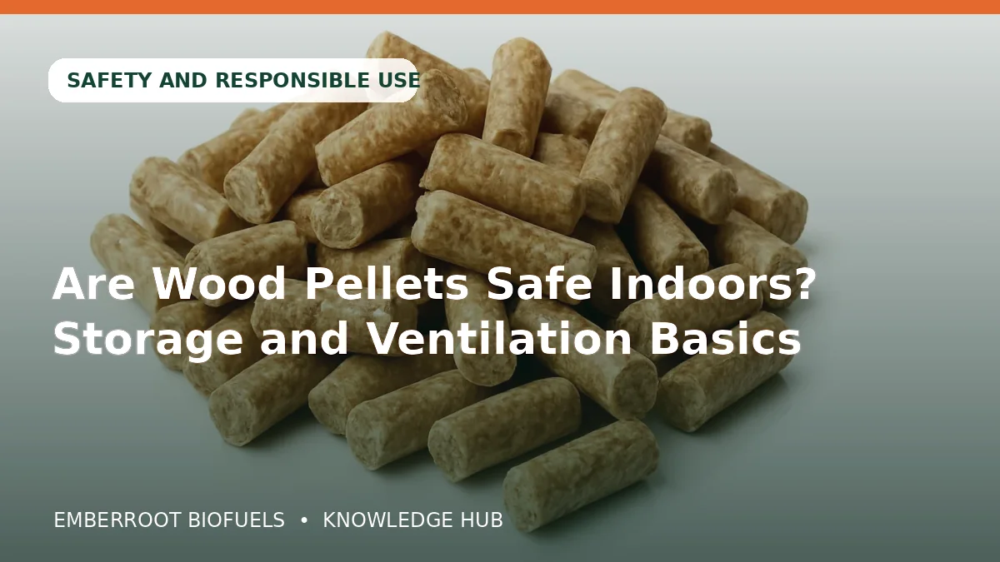

11DUBBezpečnost a odpovědné použití
Jsou dřevěné pelety bezpečné uvnitř? Skladování a větrání
Praktický průvodce tématem bezpečnost a odpovědné použití: specifikace, výkon, skladování a nákupní kontrola pro „Jsou dřevěné pelety bezpečné uvnitř? Skladování a větrání“.
Číst článek